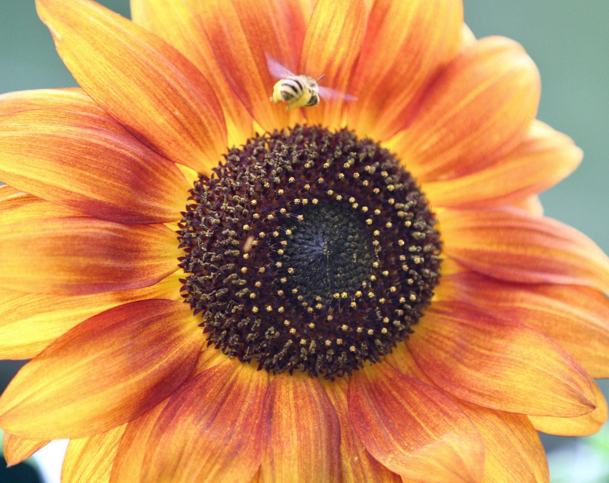
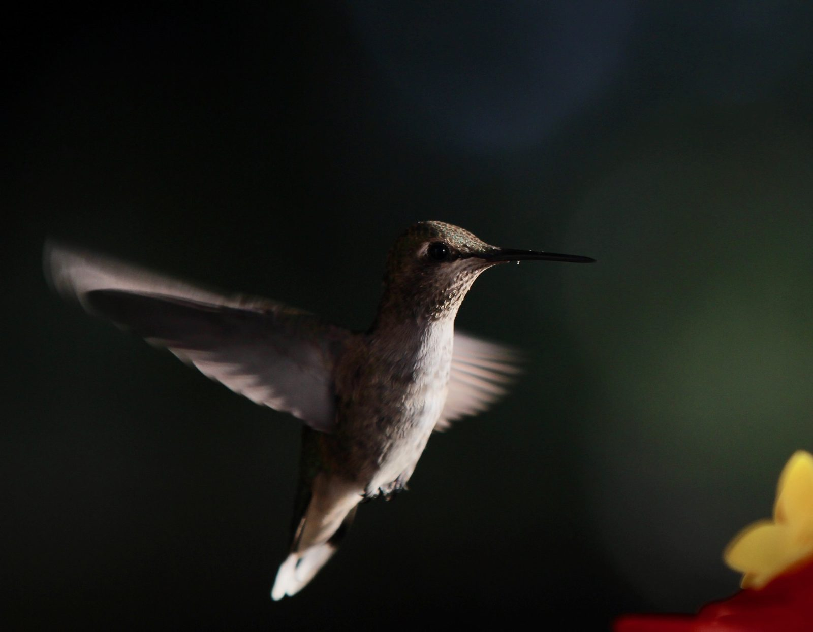

writer · photographer
A lifetime of
looking closely.
Stories about people, places, memory, and the things we carry with us.
enter the archive →what we
leave behind
Photographs. Gardens. Objects. Places. Stories. The things that remain.
→ threadthe
garden
Family, tending, memory, inheritance, and the places where stories grow.
→ threadsecond
look
Look again. Look closer. Notice what everyone else has stopped seeing.
→from the archive
all work →photography
Photographs from a life of looking.
Gardens, animals, people, water, travel, and ordinary things worth noticing.
explore photography →
